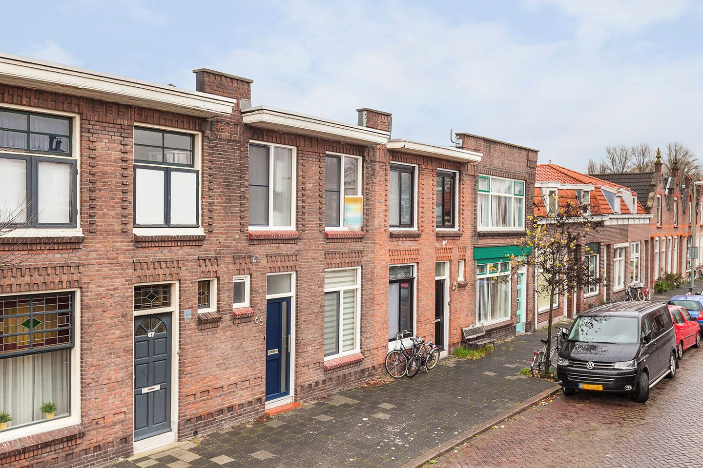
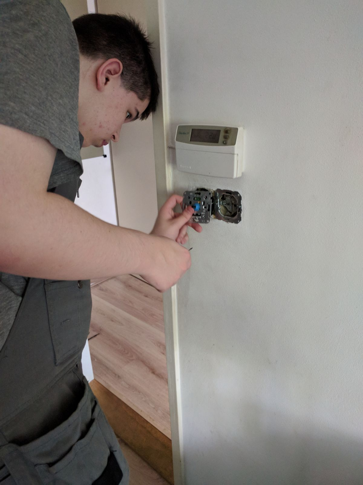

First of all I'm going to introduce myself, My name is Brandon Devon van Zanten and I'm born on the 9th of March 2001 in a hospital in Dordrecht. My parents lived in Dordrecht too then, so I'm born and raised in Dordrecht. My dad worked in Fijnaart and my mom didn't have work that time.
After 6 years of living in the Jacob Catstraat it was time to move to a more suiting location it's there where I lived for the most of my childhood. At that time I did go to the Prinses Julianaschool in Dordrecht, so basically not much changed. Everything was going very well I loved going to school and I had many friends. In fifth grade it didn't go that very well anymore, because my parents got divorced, At the start of the divorce I really had a hard time. In sixth grade I did the CITO test and scored below average and was really sad about that. The decision was made that VMBO-Basis was best for me.
At my middleschool period I went to LOKET (before it was LOC@). I got placed in seventh grade with a really good friend from primary school. I got placed in "Klas 1F" of LOKET Walburg College. I did my best to get good grades, without much effort, because I got really high grades without learning. I decided to remain at the same school on the same level and go on to eight grade. At the end of eight grade I got the best grades of the class. I got for all school subjects an eight or higher. My coach told me that I was allowed to go to MAVO, but I refused. In eight grade everyone did LOB that means job orienting lessons, because in ninth grade you must choose a profession. I arrived at electrical engineering and thought this is it. I told my coach that I wanted to stay at LOKET and learn electrical engineering at VMBO-Kader level. That suggestion was accepted and I moved on to electrical engineering VMBO-Kader.
I was still at the same location, but instead of Walburg College, I got placed on Develstein College in "klas 3E" (ninth grade). I've learned very much about electrical engineering and really liked it and thought I want to do this later as my job. I finished ninth grade very easly.
In tenth grade or klas 4E it got a little bit harder. I wanted to quit electrical engineering after autumn break, because I lost interest in electrical engineering and wanted to do something else. I got my certificate and finished my exams with only 1 insufficient grade.
Now I am at DaVinci College in Dordrecht and I'm a Dutch first year student of Application/Media Development.